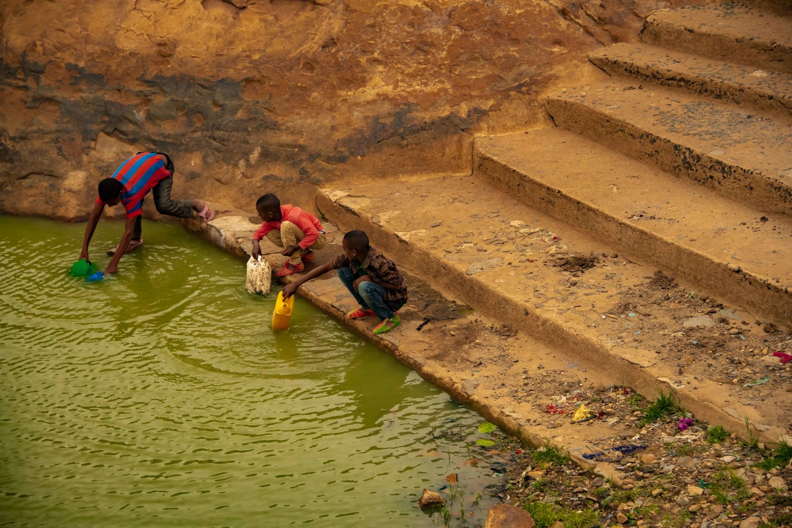

Water Scarcity
Water scarcity is a critical global issue that affects millions of people, particularly in arid and water-stressed regions. The lack of access to clean and safe drinking water sources can lead to a range of problems, including:
- Health issues and the spread of waterborne diseases.
- Reduced agricultural productivity, impacting food security.
- Increased conflicts over limited water resources.
Efforts to address water scarcity involve sustainable water management, the development of water infrastructure, and the preservation of freshwater ecosystems.